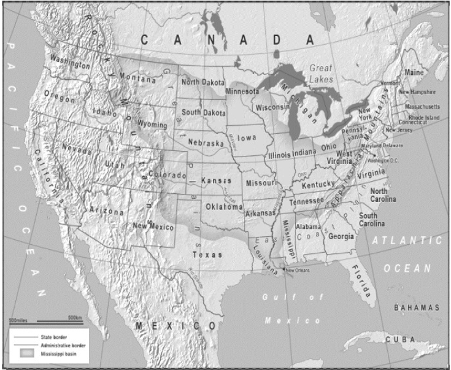

First there is the East Coast Plain leading to the Appalachian
Mountains, an area well watered by short but navigable rivers and with
fertile soil. Then, heading further west, you have the Great Plains stretching
all the way to the Rocky Mountains, and within this section lies the
Mississippi basin with its network of huge, navigable rivers flowing into the
Mississippi River all the way down to the Gulf of Mexico, which is sheltered
by the peninsula of Florida and several islands. Once over the massive
mountain range that is the Rockies you get to the desert, the Sierra Nevada
Mountains, a narrow coastal plain, and finally to the shores of the Pacific
Ocean.
To the north, above the Great Lakes, lies the Canadian Shield, the
world’s largest area of Precambrian rock, much of which forms a barrier to
human settlement. To the south-west – desert. Geography had determined
that if a political entity could get to and then control the land ‘from sea to
shining sea’, it would be a great power, the greatest history has known. Once
that power was achieved, the Union would become almost impossible to
invade. As we saw with Russia, there is ‘strategic depth’ for a defending
force to fall back to. The size of Canada, (and to a lesser extent Mexico) is
also an asset, as any hostile power attempting to invade by going through
these countries would have incredibly long supply lines.
Equally important, in modern times, is that anyone stupid enough to
contemplate invading America would soon be forced to reflect on the fact
that it contains hundreds of millions of guns, readily available to a
population that takes its life, liberty and pursuit of happiness very seriously.
In addition to the formidable US Armed Forces, there is the National Guard,
state police and, as we saw on various occasions in 2015, an urban police
force that can quickly resemble a military unit. In the event of an invasion,
every US Folsum, Fairfax, and Farmerville would quickly resemble an Iraqi
Fallujah.
But to achieve this rare geographical position of near invulnerability
from conventional attack, first the space had to be acquired and unified,
which, considering the continent is 3,000 miles from coast to coast, was
achieved astonishingly quickly.